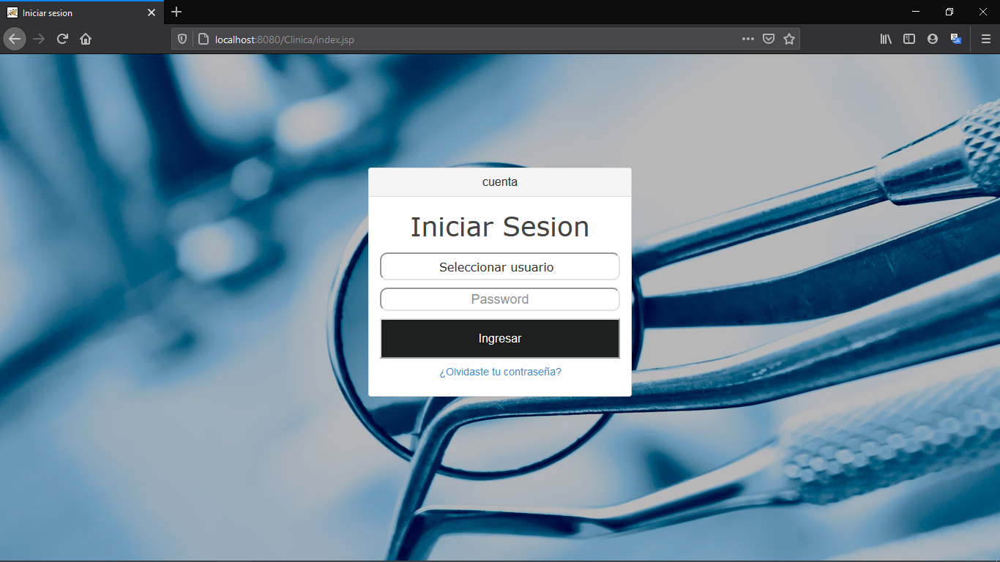
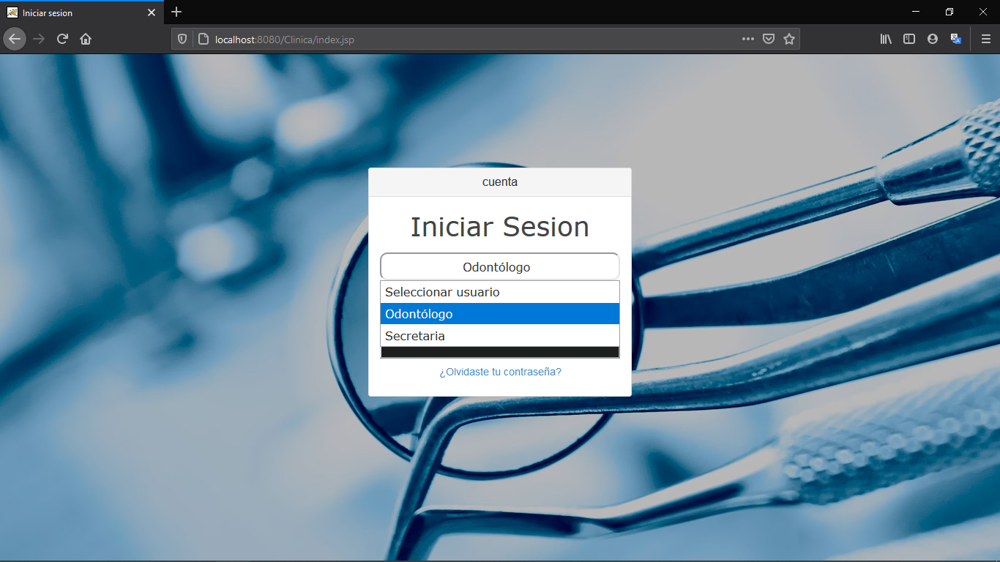
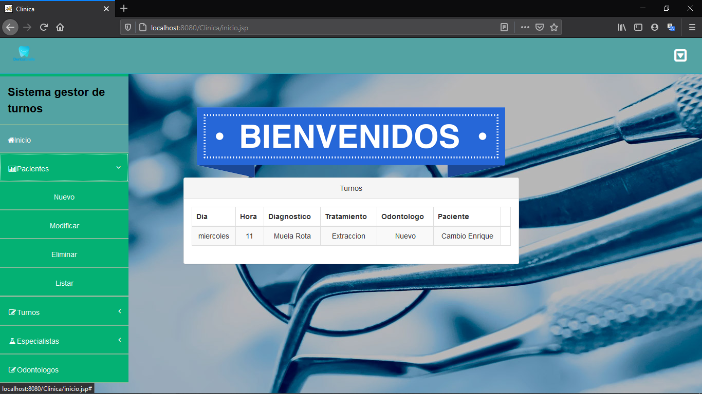
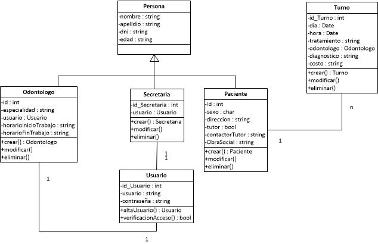

El sistema da altas de turnos, paciente y los profesionales al sistema. Es una forma de tener registrados a todos y simplemente asignarle un turno al paciente que ya esta cargado previamente y vincularlo con un odontológo. El sistema fue el seminario del curso de desarrollo web full stack. El sistemacuenta con un control de acceso, un lgin con 2 Usuarios. 1) Para Odontologos y 2) Para las Secretarias que tenga la clinica.
Detalles del desarrollo
Backend
La parte de del backend está hecho con Java. Las APIs utilizada para el mismo son Java Servlets Pages(JSP), Java Persistence API(JPA), para el mapeo de los objetos se utilizó la herramienta Hibernate.
Frontend
Para la parte del frontend, se utilizó las clásicas técnologías, Html, Css y JavaScript, esta ultima admito que me queda por aprender un poco más.
Principales Funcionalidades
- Tener un control claro de los turnos.
- Que los horarios asignados al paciente, coincidan con los horarios que tenga el Odontólogo disponible.
- Cada entidad tenga sus respectivo abml.
Login
La app inicia en esta pantalla.
Aca se eligen los 2 usuarios que tiene. Cada uno tiene su respectiva contraseña obvio.
Pantalla de inicio
Esta pantalla es la siguiente al pasar el control de acceso del login. Tambien tiene control de inicio de sesion para que cuando se escriba la url de la pagina principal, si no hico el login, rechaza la peticion. En esta imagen, tambien se ve que a la izquierda estan los abml de las entidades.
Pequeño UML
Este es el pequeño UML que realice para las clases.
Video del programa
En este pequeño video muestro el uso del sistema.
El sistema lo hice basandome en la arquitectura de 3 capas
Click aqui para ver todo el codigo de este sistema.